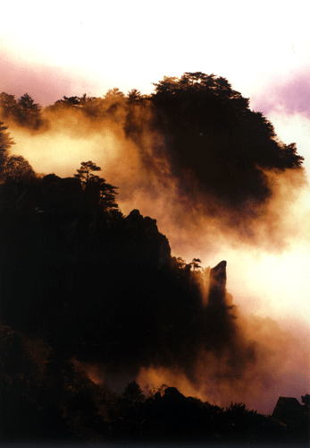
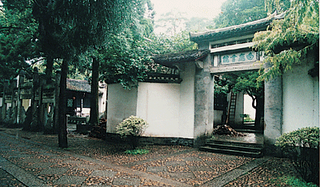
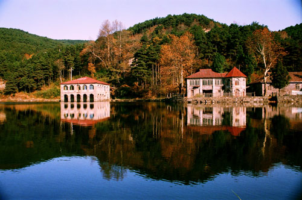

历史上的今天 国家测绘局公布庐山最新海拔高度..
2007年4月27日，国家测绘局权威公布，庐山海拔高度1473.4米。 这一最新测绘数据是江西省第一测绘院于2006年8月15日在庐山汉 阳峰现场测绘的成果，是国家权威机构公布的庐山最新海拔高.. [详情]
- 美丽吉林
- 龙 潭 山
- 朱 雀 山
- 北 山
主要景点

朱雀山

龙潭山

北 山

长白山
- 宾馆介绍
- 旅游社
- 餐饮
- 导游介绍
帝国宾馆

吉林旅行社
灯笼云雾虾
天池
公元817年 ，伟大的诗人白居易了庐山的自然美的价值。他把庐山放在了中国名山中的第一位。他说:“匡庐奇秀甲天下山。”千年来，这句名言成为中国人对庐山众口皆碑的评论。庐山奇秀，突出表现在险峰... [详情]
庐山地质公园内发育有地垒式断块山与第四纪冰川遗迹，以及第四纪冰川地层剖面和早元古代星子岩群地层剖面。迄今为止，在庐山共发现一百余处重要冰川地质遗迹，完整地记录了冰雪堆积、冰川形成... [详情]
首届中国庐山世界名山大会是由中国人民对外友好协会、中国风景名胜区协会和九江市人民政府主办，庐山风景名胜区管理局承办的，以"友谊、合作、发展"为主题，出席会议的有中国庐山、美国胡德山、欧洲山脉协会、澳大利亚卡纳文科·甘比尔山、奥地利埃森沃尔谨（阿尔卑... [详情]
相传书院的创始人可以追溯到南唐的李渤。李渤养有一只白鹿，终日相随，故人称白鹿先生。后来李渤... [详情]
东林寺建于东晋大元九年 (384年)，为庐山史悠久的寺院之一。东林寺是佛教净土宗(又称莲宗)的发... [详情]
牯牛岭满岭的庐山松，清碧犹翡翠。蜿蜓的长冲河，潺潺犹如满耳欢歌。那错落有致、建筑畸形的幢幢... [详情]